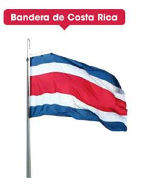
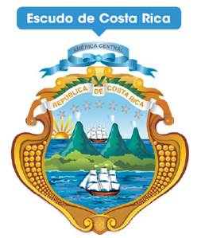
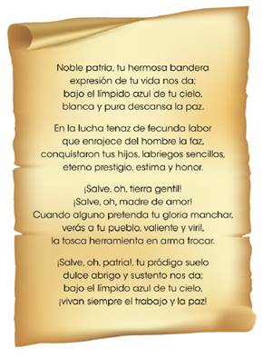

Bandera de Costa Rica.
Se oficializo el 29 de setiembre de 1848 durante la administración de José maría Castro Madriz. Sus colores significan:
Azul: simboliza el cielo que cubre a Costa Rica.
Blanco: representa la paz que se vive en el territorio nacional.
Rojo: significa la energía la valentía y el desprendimiento con que los costarricenses defendemos nuestros principios y calidez de los habitantes del país.
 |
Escudo de Costa Rica
Se oficializo en 1848 por el presidente José María Castro Madriz. Desde 1848 hasta 1998 paso por muchas modificaciones. En la administración de José María Figueres Olsen se determinaron los elementos que forman el escudo en la actualidad.
Algunos elementos del escudo en la actualidad son:
Una cinta de color blanco que dice “Republica de Costa Rica”
Una cinta de color celeste que dice “ América Central”
Siete estrellas plateadas que representan las provincias que componen el territorio nacional.
 |
Himno Nacional
La música del himno fue escrita por Manuel maría Gutiérrez en junio de 1852. La letra se escogió por un concurso en 1903 y el ganador fue José María Zeledón. La letra fue oficializada en 1948 y la música en 1979.
 |